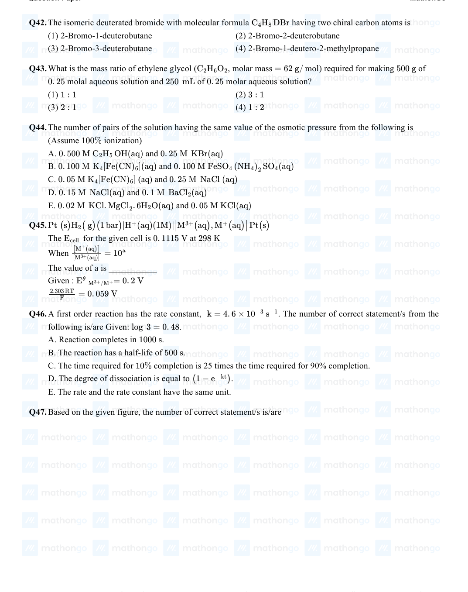

🧪 Solutions
59
Total Questions
5
Years
2
Clusters
Question Clusters
CHEM-SOLUTION-RAOULTS_LAW_VAPOUR_PRESSURE
Solutions: Raoult's Law & Ideal/Non-Ideal Solutions
CHEM-SOLUTION-COLLIGATIVE_PROPERTIES_VANTHOFF
Solutions: Colligative Properties & van 't Hoff Factor
Year-wise Frequency
| Year | Questions | Frequency |
|---|---|---|
| 2021 | 23 | |
| 2022 | 8 | |
| 2023 | 12 | |
| 2024 | 14 | |
| 2025 | 2 |
Questions
Showing first 50 of 59 questions.
Q58 (2021 Shift 1)
AB2 is 10% dissociated in water to A2+ and B− . The boiling point of 10. 0 molal aqueous solution of AB2 is-- ∘C . (Round off to the Nearest Integer). [Given : Molal elevation constant of water Kb = 0. 5 K kg mol−1 boiling point of pure water = 100°C ]
Answer:
106CHEM-2021-0101-S1-Q058
Q42 (2021 Shift 1)
The point of intersection and sudden increase in the slope, in the diagram given below, respectively, indicates:

CHEM-2021-0101-S1-Q042
Q58 (2021 Shift 1)
The oxygen dissolved in water exerts a partial pressure of 20 kPa in the vapour above water. The molar solubility of oxygen in water is ______ ×10−5 mol dm−3. (Round off to the Nearest Integer). 104 [Given : Henry's law constant = KH = 8. 0 × kPa for O2. Density of water with dissolved oxygen = 1. 0 kg dm−3 ]
Answer:
1389CHEM-2021-0101-S1-Q058
Q56 (2021 Shift 1)
2 molal solution of a weak acid HA has a freezing point of 3. 885°C. The degree of dissociation of this acid is ______ ×10−3. (Round off to the Nearest Integer). [ Given : Molal depression constant of water = 1. 85 K kg mol−1 Freezing point of pure water = 0°C]
Answer:
50CHEM-2021-0101-S1-Q056
Q56 (2021 Shift 2)
A solute A dimerizes in water. The boiling point of a 2 molal solution of A is 100. . The percentage association of A is ___ . (Round off to the Nearest integer) Use : for water mol−1 Kb = 0. 52 K kg Boiling point of water = 100°C
Answer:
100CHEM-2021-0101-S2-Q056
Q56 (2021 Shift 1)
At , the vapour pressure of benzene is torr and that of methyl benzene is torr. The mole fraction of 20°C 70 20 benzene in the vapour phase at 20°C above an equimolar mixture of benzene and methyl benzene is __ × 10−2. (Nearest integer)
Answer:
78CHEM-2021-0101-S1-Q056
Q56 (2021 Shift 2)
The vapour pressures of A and B at 25°C are 90 mmHg and 15 mm Hg respectively. If A and B are mixed such that the mole fraction of A in the mixture is 0. 6, then the mole fraction of B in the vapour phase is x × 10−1. The value of x is (Nearest integer)
Answer:
1CHEM-2021-0101-S2-Q056
Q35 (2021 Shift 1)
Which purification technique is used for high boiling organic liquid compound (decomposes near its boiling point) ?
CHEM-2021-0101-S1-Q035
Q40 (2021 Shift 1)
Which one of the following 0. 06 M aqueous solutions has lowest freezing point ?
CHEM-2021-0101-S1-Q040
Q56 (2021 Shift 2)
C6H6 freezes at 5. 5°C. The temperature at which a solution of 10 g of C4H10 in 200 g of C6H6 freeze is _______ ∘C. (nearest integer value), (The molal freezing point depression constant of is ) C6H6 5. 12°C/m.
Answer:
1CHEM-2021-0101-S2-Q056
Q58 (2021 Shift 1)
1 molal aqueous solution of an electrolyte A2 B3 is 60% ionised. The boiling point of the solution at 1 atm is mol−1 _____ K . (Rounded-off to the nearest integer) [Given Kb for (H2O) = 0. 52 K kg ]
Answer:
375CHEM-2021-0101-S1-Q058
Q56 (2021 Shift 2)
If a compound AB dissociates to the extent of 75% in an aqueous solution, the molality of the solution which shows a 2. 5 K rise in the boiling point of the solution is ___ molal. (Rounded-off to the nearest integer) [Kb = 0. 52K kg mol−1] .
Answer:
3CHEM-2021-0101-S2-Q056
Q58 (2021 Shift 1)
CO2 gas is bubbled through water during a soft drink manufacturing process at 298 K. If CO2 exerts a partial pressure of 0 . 835 bar then x m mol of CO2 would dissolve in 0 . 9 L of water. The value of x is _______. (Nearest integer) (Henry's law constant for CO2 at 298 K is 1 . 67 × 103 bar)
Answer:
25CHEM-2021-0101-S1-Q058
Q58 (2021 Shift 2)
When 3. 00 g of a substance X ' is dissolved in 100 g of CCl4 , it raises the boiling point by 0. 60 K . The molar mol−1 mass of the substance ' X′ is ___ g . (Nearest integer). [Given Kb for CCl4 is 5. 0 K kg mol−1]
Answer:
250CHEM-2021-0101-S2-Q058
Q56 (2021 Shift 1)
Of the following four aqueous solutions, the total number of those solutions whose freezing point is lower than that of 0. 10 MC2 H5 OH is (Integer answer) (i) 0. 10M Ba3 (PO4)2 (ii) 0. 10M Na2 SO4 (iii) 0. 10M KCl (iv) 0. 10M Li3 PO4

Answer:
4CHEM-2021-0101-S1-Q056
Q57 (2021 Shift 2)
83 g of ethylene glycol dissolved in 625 g of water. The freezing point of the solution is ..... K. (Nearest integer) [Use : Molal Freezing point depression constant of water = 1. 86 K kg mol−1 Freezing point of water = 273 K Atomic masses : C : 12. 0u, O : 16. 0u, H : 1. 0u]
Answer:
269CHEM-2021-0101-S2-Q057
Q38 (2021 Shift 1)
Given below are two statements: Statement I : A mixture of chloroform and aniline can be separated by simple distillation. Statement II : When separating aniline from a mixture of aniline and water by steam distillation aniline boils below its boiling point. In the light of the above statements, choose the most appropriate answer from the options given below:
CHEM-2021-0101-S1-Q038
Q56 (2021 Shift 1)
224 mL of SO2(g) at 298 K and 1 atm is passed through 100 mL of 0. 1 M NaOH solution. The non-volatile solute produced is dissolved in 36 g of water. The lowering of vapour pressure of solution (assuming the solution is dilute) ( P°(H2O)= 24 mm of Hg ) is x × 10−2 mm of Hg the value of x is (Integer answer)
Answer:
18CHEM-2021-0101-S1-Q056
Q57 (2021 Shift 2)
When of benzoic acid is dissolved in of water, the freezing point of solution was found to be 12. 2 g 100 g −0. 93 °C(Kf(H2O) = 1. 86 K kg mol−1) . The number (n) of benzoic acid molecules associated (assuming 100% association) is _.
Answer:
2CHEM-2021-0101-S2-Q057
Q57 (2021 Shift 2)
In a solvent 50% of an acid HA dimerizes and the rest dissociates. The van't Hoff factor of the acid is _____ ×10−2 (Round off to the nearest integer)
Answer:
125CHEM-2021-0101-S2-Q057
Q35 (2021 Shift 1)
Given below are two statements : one is labelled as Assertion
CHEM-2021-0101-S1-Q035
Q38 (2021 Shift 1)
Which one of the following 0. 10 M aqueous solutions will exhibit the largest freezing point depression?
CHEM-2021-0101-S1-Q038
Q57 (2021 Shift 2)
1 . 22 g of an organic acid is separately dissolved in 100 g of benzene Kb = 2 . 6 K kg mol-1 and 100 g of acetone mol-1 The acid is known to dimerize in benzene but remain as a monomer in Kb = 1 . 7 K kg . acetone. The boiling point of the solution in acetone increases by 0 . 17°C . The increase in boiling point of solution in benzene in∘C is x × 10-2 . The value of x is (Nearest integer) [Atomic mass : 0] C = 12 . 0, H = 1 . 0, O = 16 .
Answer:
13CHEM-2021-0101-S2-Q057
Q55 (2022 Shift 2)
A company dissolves ' x ' amount of CO2 at 298 K in 1 litre of water to prepare soda water. X = ×10−3 g . (nearest integer) (Given: partial pressure of CO2 at 298 K = 0. 835 bar. Henry's law constant for CO2 at 298 K = 1. 67 kbar . Atomic mass of H, C and O is 1, 12 , and 6 g mol−1 , respectively)
Answer:
1221CHEM-2022-0101-S2-Q055
Q56 (2022 Shift 1)
2 g of a non-volatile non-electrolyte solute is disolved in 200 g of two different solvents A and B whose ebullioscopic constants are in the ratio of 1 : 8 . The elevation in boiling points of A and B are in the ratio x (x : y) . The value of y is____(Nearest Integer) y
Answer:
8CHEM-2022-0101-S1-Q056
Q38 (2022 Shift 1)
Given are two statements one is labelled as Assertion and other is labelled as Reason. Assertion: Magnesium can reduce Al2 O3 at a temperature below 1350 °C , while above 1350 °C aluminium can reduce MgO . Reason: The melting and boiling points of magnesium are lower than those of aluminium. In light of the above statements, choose most appropriate answer from the options given below
CHEM-2022-0101-S1-Q038
Q56 (2022 Shift 1)
The vapour pressures of two volatile liquids A and B at 25 °C are 50 Torr and 100 Torr, respectively. If the liquid mixture contains 0. 3 mole fraction of A , then the mole fraction of liquid B in the vapour phase is x . 17 The value of x is
Answer:
14CHEM-2022-0101-S1-Q056
Q60 (2022 Shift 2)
2. 5 g of protein containing only glycine (C2H5 NO2) is dissolved in water to make 500 mL of solution. The osmotic pressure of this solution at 300 K is found to be 5. 03 × 10−3 bar. The total number of glycine units present in the protein is (Given : R = 0. 083 L bar K−1 mol−1 )
Answer:
330CHEM-2022-0101-S2-Q060
Q55 (2022 Shift 1)
1. 2 mL of acetic acid is dissolved in water to make 2. 0 L of solution. The depression in freezing point observed for this strength of acid is 0. 0198 °C . The percentage of dissociation of the acid is (Nearest integer) [Given : Density of acetic acid is 1. 02 g mL−1 Molar mass of acetic acid is 60 g mol−1 Kf(H2O) = 1. 85 K kg mol−1 ]
Answer:
5CHEM-2022-0101-S1-Q055
Q51 (2022 Shift 2)
A box contains 0. 90 g of liquid water in equilibrium with water vapour at 27°C . The equilibrium vapour pressure of water at 27°C 32. 0 Torr. When the volume of the box is increased, some of the liquid water evaporates to maintain the equilibrium pressure. If all the liquid water evaporates, then the volume of the box must be ______ litre. [nearest integer] (Given: R = 0. 082 L atm K−1 mol−1 _ (Ignore the volume of the liquid water and assume water vapours behave as an ideal gas.)
Answer:
29CHEM-2022-0101-S2-Q051
Q55 (2022 Shift 2)
Elevation in boiling point for 1. 5 molal solution of glucose in water is 4 K . The depression in freezing point for 4. 5 molal solution of glucose in water is 4 K . The ratio of molal elevation constant to molal depression constant (Kb/Kf) is
Answer:
3CHEM-2022-0101-S2-Q055
Q56 (2023 Shift 1)
25 mL of an aqueous solution of KCl was found to require 20 mL of 1M AgNO3 solution when titrated using K2CrO4 as an indicator. What is the depression in freezing point of KCl solution of the given concentration? (Nearest integer). (Given : Kf = 2 . 0 K kg mol-1 ) Assume 1) 100% ionization and 2) density of the aqueous solution as 1 g mL-1
Answer:
3CHEM-2023-0101-S1-Q056
Q44 (2023 Shift 1)
The vapour pressure vs. temperature curve for a solution solvent system is shown below. The boiling point of the solvent is _____°C.
CHEM-2023-0101-S1-Q044
Q47 (2023 Shift 2)
If the boiling points of two solvents X and Y (having same molecular weights) are in the ratio 2: 1 and their enthalpy of vaporizations are in the ratio 1 : 2 , then the boiling point elevation constant of X is m times the boiling point elevation constant of . The value of is (nearest integer). Y m
Answer:
4CHEM-2023-0101-S2-Q047
Q58 (2023 Shift 1)
If the degree of dissociation of aqueous solution of weak monobasic acid is determined to be 0 . 3, then the observed freezing point will be _____ % higher than the expected/theoretical freezing point. (Nearest integer).

Answer:
30CHEM-2023-0101-S1-Q058
Q47 (2023 Shift 1)
80 mole percent of MgCl2 is dissociated in aqueous solution. The vapour pressure of 1. 0 molal aqueous solution of MgCl2 at 38oC is _____ mm Hg . (Nearest integer) Given: Vapour pressure of water at 38oC is 50 mm Hg
Answer:
2CHEM-2023-0101-S1-Q047
Q38 (2023 Shift 1)
In the depression of freezing point experiment A. Vapour pressure of the solution is less than that of pure solvent B. Vapour pressure of the solution is more than that of pure solvent C. Only solute molecules solidify at the freezing point D. Only solvent molecules solidify at the freezing point
CHEM-2023-0101-S1-Q038
Q45 (2023 Shift 2)
The Total pressure observed by mixing two liquid A and B is 350 mm Hg when their mole fractions are 0. 7 and 0. 3 respectively. The Total pressure becomes 410 mm Hg if the mole fractions are changed to 0. 2 and 0. 8 respectively for A and B . The vapour pressure of pure A is ______ mm Hg . (Nearest integer) Consider the liquids and solutions behave ideally
Answer:
3CHEM-2023-0101-S2-Q045
Q44 (2023 Shift 2)
The number of pairs of the solution having the same value of the osmotic pressure from the following is (Assume 100% ionization) A. 0. 500 M C2H5 OH(aq) and 0. 25 M KBr(aq) B. 0. 100 M K4[Fe(CN)6](aq) and 0. 100 M FeSO4 (NH4)2 SO4(aq) C. 0. 05 M K4[Fe(CN)6] (aq) and 0. 25 M NaCl (aq) D. 0. 15 M NaCl(aq) and 0. 1 M BaCl2(aq) E. 0. 02 M KCl. MgCl2. 6H2O(aq) and 0. 05 M KCl(aq)

CHEM-2023-0101-S2-Q044
Q47 (2023 Shift 2)
Based on the given figure, the number of correct statement/s is/are A. Surface tension is the outcome of equal attractive and repulsion forces acting on the liquid molecule in bulk. B. Surface tension is due to uneven forces acting on the molecules present on the surface. C. The molecule in the bulk can never come to the liquid surface. D. The molecules on the surface are responsible for vapour pressure if the system is a closed system.
CHEM-2023-0101-S2-Q047
Q44 (2023 Shift 2)
Match List I with List II. List I List II A.van't Hoff I. Cryoscopic constant factor, i B. kf II. Isotonic solutions C. Solutions with same III. Normal molar mass osmotic pressure Abnormal molar mas Solutions with same composition D.Azeotropes IV. of vapour above it Choose the correct answer from the options given below:
CHEM-2023-0101-S2-Q044
Q46 (2023 Shift 2)
Lead storage battery contains 38% by weight solution of H2 SO4 . The van't Hoff factor is 2. 67 at this concentration. The temperature in Kelvin at which the solution in the battery will freeze is _____ (Nearest integer). Given Kf = 1. 8 K kg mol−1
CHEM-2023-0101-S2-Q046
Q47 (2023 Shift 2)
Evaluate the following statements for their correctness. A. The elevation in boiling point temperature of water will be same for 0. 1 M NaCl and 0. 1 M urea. B. Azeotropic mixture boil without change in their composition. C. Osmosis always takes place from hypertonic to hypotonic solution. D. The density of 32% H2 SO4 solution having molarity 4. 09 M is approximately 1. 26 g mL–1 . E. A negatively charged sol is obtained when KI solution is added to silver nitrate solution. Choose the correct answer from the options given below:
CHEM-2023-0101-S2-Q047
Q38 (2024 Shift 2)
Which among the following has highest boiling point?
CHEM-2024-0101-S2-Q038
Q56 (2024 Shift 1)
2.5 g of a non-volatile, non-electrolyte is dissolved in 100 g of water at 25∘C . The solution showed a boiling point elevation by 2∘C . Assuming the solute concentration is negligible with respect to the solvent concentration, the vapor pressure of the resulting aqueous solution is mm of Hg (nearest integer) [Given : Molal boiling point elevation constant of water (Kb) = 0.52 K. kgmol−1 , 1 atm pressure = 760 mm of Hg , mol−1 molar mass of water = 18 g ]
Answer:
707CHEM-2024-0101-S1-Q056
Q55 (2024 Shift 2)
2.7 kg of each of water and acetic acid are mixed. The freezing point of the solution will be −x∘C . Consider the acetic acid does not dimerise in water, nor dissociates in water. = ______ (nearest integer) [Given: Molar x mass of water = 18 g mol−1 , acetic acid = 60 g mol−1 KfH2O : 1.86 K kg mol−1 Kf acetic acid: 3.90 K kg mol−1 freezing point: H2O = 273 K , acetic acid = 290 K ]
Answer:
31CHEM-2024-0101-S2-Q055
Q40 (2024 Shift 1)
For the Compounds :
CHEM-2024-0101-S1-Q040
Q55 (2024 Shift 1)
An artificial cell is made by encapsulating 0.2M glucose solution within a semipermeable membrane. The osmotic pressure developed when the artificial cell is placed within a 0.05M solution of NaCl at 300 K is _______ ×10−1 bar. (nearest integer). [Given : R = 0.083 Lbarmol−1 K−1 ] Assume complete dissociation of NaCl
Answer:
25CHEM-2024-0101-S1-Q055
Q39 (2024 Shift 1)
Which of the following statements are correct? A. Glycerol is purified by vacuum distillation because it decomposes at its normal boiling point. B. Aniline can be purified by steam distillation as aniline is miscible in water. C. Ethanol can be separated from ethanol water mixture by azeotropic distillation because it forms azeotrope. D. An organic compound is pure, if mixed M.P. is remained same. Choose the most appropriate answer from the options given below :
CHEM-2024-0101-S1-Q039
Q41 (2024 Shift 1)
Given below are two statements: Statement I : Gallium is used in the manufacturing of thermometers. Statement II : A thermometer containing gallium is useful for measuring the freezing point (256 K) of brine solution. In the light of the above statements, choose the correct answer from the options given below :
CHEM-2024-0101-S1-Q041